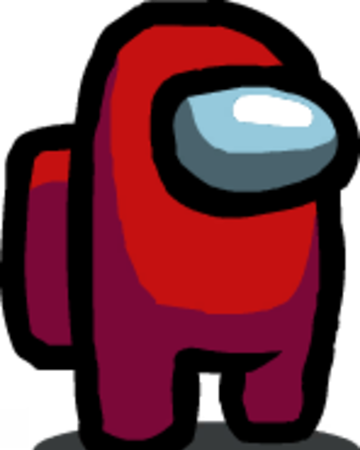

There is 1 imposter among us.


Among Us is an American science-fiction murder mystery game developed and published by Innersloth on June 15, 2018 for iOS and Android, and on August 18, 2018 for PC at Steam. The game follows a group of crewmates which, among them, has An Impostor whose goal is sabotage their ship and kill everyone.
Source: Among Us Fandom